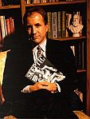

Napoleón Bonaparte dijo una vez que ningún hombre puede convertirse en ateo simplemente deseándolo; y tenía razón. No es algo que se desea, uno simplemente llega a esa conclusión y después, si te declaras como tal, te pasas la vida defendiéndola. Esta posición de defensa la observo repetidamente en las redes sociales, especialmente en esa rara oportunidad que tengo de merodear por el mundo adolescente en el que vive mi hijo. El otro día, precisamente pensaba, que la mayoría de los jóvenes religiosos en mi país no necesita defender sus creencias; de hecho, las llevan por la vida por omisión; es el ateísmo que necesariamente suscita una postura de vigilancia, el sólo hecho de declarar tu no creencia te hace, por omisión también, una persona mala ante los ojos de muchos. Lo experimenté el otro día con uno de los contactos de mi hijo y la experiencia me abrió los ojos nuevamente ante la intolerancia religiosa.
No es algo que tomo a la ligera. Estoy hablando de mi hijo. De hecho, esta chica en particular consideró un insulto personal aquella afirmación atea que él había escrito en su estado y, por supuesto, al no estar preparada para defender su postura, integrada en su cerebro por sus familiares y nunca discutida, su mejor posición de ataque fue el insulto, usar palabras feas para ocultar su desconocimiento. Una estrategia de cobardes y, precisamente, de ignorantes.
La retórica creyente es como una de esas muñequitas rusas donde una más pequeña viene dentro de la otra, el mismo argumento con otro tamaño; si intentas detener la cadena o profundizar en ella una de estas cosas suele suceder: te sacan otra muñequita al estilo “libre albedrío”, “no cuestiones los misteriosos caminos de Dios” y “la fe no requiere de análisis”; o recurren al insulto o, resignadamente, te aseguran que rezarán por tu alma.
“La fe religiosa depende de un grupo de factores sociales, psicológicos y emocionales que tienen poco o nada que ver con las probabilidades, las evidencias o la lógica”, escribió el autor escéptico estadounidense Michael Shermer. Y es así, las personas que creen, ya sea en dioses o en el horóscopo, sienten que existe un plan divino que ha sido creado sólo para ellos; justamente, por estas ineludibles pero insostenibles características de la fe, es que la ciencia de la neurología continúa buscando respuestas al comportamiento crédulo en el cerebro.
Tomemos, por ejemplo, los resultados del reciente experimento de Uffe Schjødt de la Universidad de Aarhus, en Dinamarca. El equipo utilizó dos muestras de voluntarios: un grupo pentecostal y otro grupo secular, y los sometió a varias pruebas mientras sus cabezas eran examinadas por aparatos de resonancia magnética que permiten la observación de la actividad cerebral. Antes de que los voluntarios oyeran el audio en las pruebas, los científicos les dijeron que escucharían sermones leídos por tres personas distintas: un cristiano, un no creyente y un cristiano a quien le atribuyen poderes para sanar. Los sermones, por supuesto, fueron todos leídos por cristianos comunes y corrientes, en voces con modulaciones similares y los investigadores dispusieron su orden completamente al azar. Pero los voluntarios siempre sabían quién, supuestamente, recitaba el sermón.
Los resultados muestran cómo funcionan los mecanismos que permiten este conflicto de lógica. Fíjense qué cosa más curiosa, para los pentecostales, el cristiano con poderes pronunciaba el mejor discurso y era el más carismático de todos; de hecho, algunos de los voluntarios llegaron a decir que en el discurso del no creyente no sintieron la presencia de Dios (recuerde que ningún discurso fue leído por ateos pero los voluntarios desconocen tal información). En el grupo de los no creyentes, sin embargo, la diferencia no fue significativa y evaluaron los sermones más o menos con la misma intensidad.
Ahora bien, los científicos daneses se preguntaban, ¿a qué se debe esta percepción errada?, ¿cómo y cuándo ocurrió ese estado de hipnosis que los lleva a valorar discursos similares basados en una afirmación previa y en los estereotipos que ésta conlleva?
El silencio en varias áreas cerebrales ofrece la respuesta. Cuando los creyentes escuchaban hablar al que ellos suponían era el no creyente, regiones cerebrales pertinentes a la ejecución se activaban; sin embargo, estas mismas regiones se desactivaban cuando el creyente con poderes hablaba. Estas zonas pertenecen a la parte del cerebro entre cuyas funciones se encuentran monitorear, evaluar y tomar decisiones. No obstante, en los no creyentes esas mismas regiones siempre se activaban con los discursos.
“Cuando escuchamos hablar a alguien en quien implícitamente confiamos apagamos nuestras facultades críticas y dejamos que todo lo que diga nos empape. Es lo mismo que ocurre cuando la gente medita o cuando alguien ha sido hipnotizado, caen estas barreras ejecutivas. Aunque en este escenario los ateos no cayeron en la trampa, esta no es una característica sólo de religiosos”, explicó Schjødt.
Ciertamente, todos podemos caer en la admiración ciega y la idolatría (piense en la persona enamorada) pero el ejercicio del escepticismo y del pensamiento crítico nos protege de la credulidad y la confianza desmedida, impide que perdamos el tiempo persiguiendo patrones ilógicos en laberintos sin salida; y no sólo es importante promover este tipo de pensamiento crítico entre religiosos, de hecho, es dentro del mundo de la investigación científica donde estas cualidades son consideradas absolutamente obligatorias.
Ahora bien, la desactivación de estas áreas no representa nada malo en sí misma. Estos estados de trance pueden ser una buena forma de eliminar el estrés del diario vivir moderno, lo mismo que la meditación y la hipnosis, son vías para aminorar la carga, dejarse llevar. El inconveniente está en permitir que caiga la guardia al elegir tus líderes o durante sus discursos. Peor aún, al tomar decisiones sobre tu vida.

Saber que zonas de tu cerebro se desactivan cuando alguien en quien confías habla es una razón más para promover el pensamiento crítico, especialmente entre niños, hay que enseñarlos a que no tomen ninguna palabra como sagrada y que desconfíen de gente que dice tener autoridad sobre ellos; es preferible dejar que las acciones te digan quién es quién en la vida, recordar siempre aquello de que el hábito no hace al monje. Prepare a su hijo, creyente o no, para defender sus posiciones en la vida sin insultar, utilizando el diálogo racional y, más que nada, prepárelo para que sepa que aún cuando en el mundo todos somos igualmente distintos y en la capacidad para la tolerancia y el respeto es donde habita la paz, no todas las ideas ameritan respeto y comprensión. Si no lo hace, son ellos los que quedarán marginados y olvidados en las isletas de la ignorancia.

Tengo un tío que afirma que el diablo “está en posesión de mi mente”. Cuando le respondo que su afirmación es imposible porque el diablo no existe, me asegura: “Eso es lo que el diablo quiere que creas”.
Voilà!, otra muñequita rusa.

Excusas que son difíciles de patrocinar
¿Qué le espera a la mujer suicida en el cielo?
Miramos, medimos, juzgamos. Hablamos, analizamos, clasificamos: “no, no eres de mi grupo, perteneces aquí o a este allí”; continuamos el camino con los ya ubicados: están los que vamos añadiendo al grupo, los que forman parte de tu vida no importa a qué grupo pertenezcan y los imprescindibles, a quienes amas tanto que sacrificarías parte de tu grupo sólo por mantenerlos cerca. Con esos, por lo general, compartes genes, o un lazo tan estrecho creado por años de cercanía, que no importa por dónde anden, siempre estarás dispuesto a ayudar, a tenderles una mano. Esa compasión que nos caracteriza, a muchos más que a otros, está por encima, o debería estarlo, de nuestras creencias; sin embargo, los graves y continuos conflictos entre creyentes reflejan ese terco primitivismo que no termina de abandonarnos.
El otro día un señor afirmaba en televisión que Dios había salvado su matrimonio. El hombre estaba seguro de que su divinidad lo ayudó a que su esposa no se enterara de que le es infiel. No es una nueva discordancia, las he escuchado en sus distintas magnitudes; en la guerra, por ejemplo, ¿de qué lado está Dios?, o ¿cómo podría funcionar la oración entre un grupo de apostadores cristianos que rezan por caballos distintos? Son cuestiones simples y risibles, hasta desestimables, pero forman parte de la agenda del creyente en general. Es necesario comprender un punto esencial: el creyente cree. Piensa que todo ese mundo sobrenatural es real y que su dios lo cuida, a pesar de sus injustificables e imperdonables pecados, Dios tiene un plan para él.
La psicóloga del programa tomó la posición de abogada de Dios. Con un poco de indignación feminista, aquella mujer casi le gritaba: “no me parece que Dios sea un adúltero machista que condona la mentira y la traición y desperdicia su tiempo en una estupidez como la que acaba usted de narrar”. Aunque la mujer inyectaba un poco de razón en aquel mundo discordante de su compañero creyente, antes de cambiar el canal pensé: sí, sí que lo es. Aquel dios que él invocaba como el salvador de su traición es capaz de eso y más, es capaz de todo lo que es capaz un ser humano.
En la Biblia parece tener varias personalidades, las más notorias están divididas por los testamentos. Como bien apunta el comediante estadounidense Lewis Black, al parecer, el nacimiento de su hijo en el Nuevo Testamento apaciguó un poco a la deidad ya que antes su conducta era realmente psicópata. La inestabilidad divina en el libro de los cristianos permite que este señor evoque a su Dios para que lo salve de un castigo que, en términos justos, realmente merece. Que pueda usar su creencia para justificar sus acciones habla muy mal de su fe; es que no se puede ser tan relativo cuando pregonas verdades absolutas.
La realidad es otra; no hay nada más relativista que la religión (sólo piense en las escapatorias del Papa sobre sus inexcusables empleados pederastas). Los dioses se apegan a las debilidades de sus creyentes porque son creaciones humanas. Los dioses no matan, los hombres que los inventan a su imagen y semejanza, sí. Son las personas las que conciben vírgenes en el cielo como regalos para asesinos maniáticos, un producto obvio del atrasado pensamiento machista tan grotescamente vulgar como el acto del terrorista suicida. La humanidad no está por encima de sus creencias, y de eso sí tenemos numerosas evidencias. ¿Qué le espera a la mujer suicida en el cielo? Puede usted estar seguro que no tendrá que ver con sexo o con su placer. A lo mejor le ofrezcan la eternidad detrás de un velo. La gente inventa dioses para justificar la violencia tribal anclada en el deseo de poder y para brindar consuelo y un falso sentido de protección a los infortunados y discriminados.

Si vas a creer en un dios, una idea abstracta y ajena a este mundo es la única alternativa válida que podría encajar con el sentido común y el conocimiento moderno; una teoría que, aunque innecesaria, necesitas todavía. De otra forma, es imposible defender a través de la razón a un ser omnipotente y bondadoso que actúa sobre cada ser vivo en la Tierra, un ser que es distinto para cada creyente. Esa notable ambigüedad refleja la verdadera naturaleza de los dioses: otro concepto humano que ha variado por toda la historia humana; los dioses mueren, nadie le rinde culto hoy a Horus, pero para sus creyentes, él fue tan importante como los dioses vigentes hoy. Eliminarlo de nuestra lista sólo prueba que somos todos ateos. Algunos hemos dado un paso más y hemos eliminado a ese último dios de la lista; el tuyo.

No se es incrédulo por deseo; la ciencia hoy ofrece conocimiento a granel sobre un sinnúmero de espectaculares temas y pensamos, como escribió una vez Charles Darwin, que “la ignorancia genera confianza más frecuentemente que el conocimiento, son aquellos que saben poco, y no esos que saben más, quienes tan positivamente afirman que este o aquel problema nunca será resuelto por la ciencia”.
Volver al índice de la Lupa Herética
© 2008-2025 Glenys Álvarez y Sin Dioses. Prohibida la reproducción con fines comerciales.
Comentarios
Comments powered by Disqus